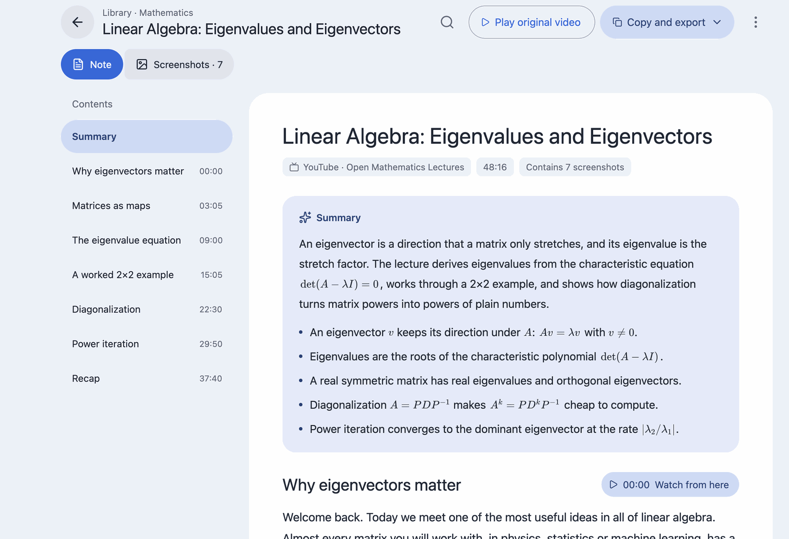
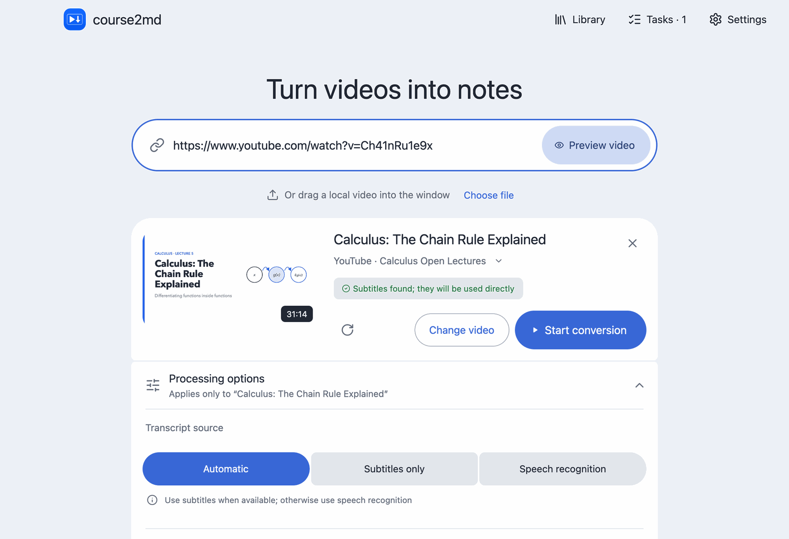
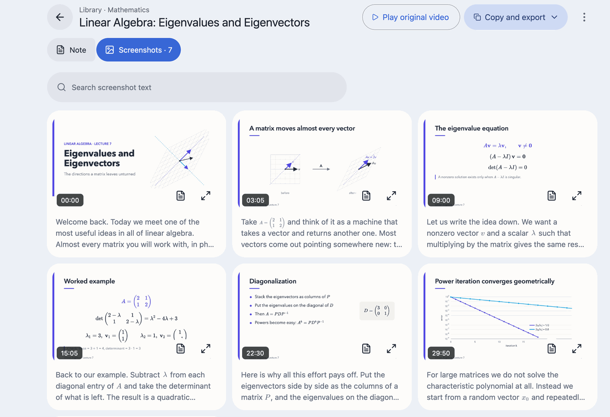
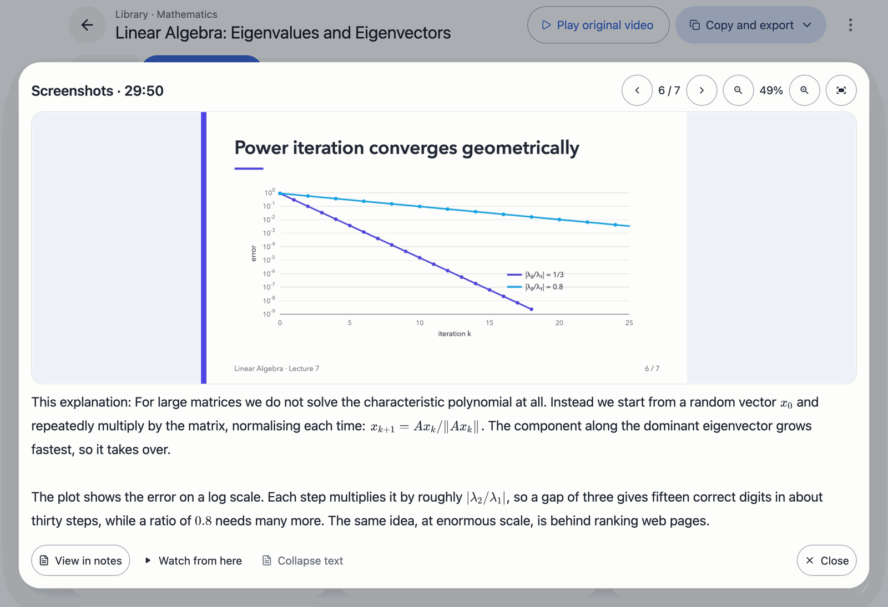
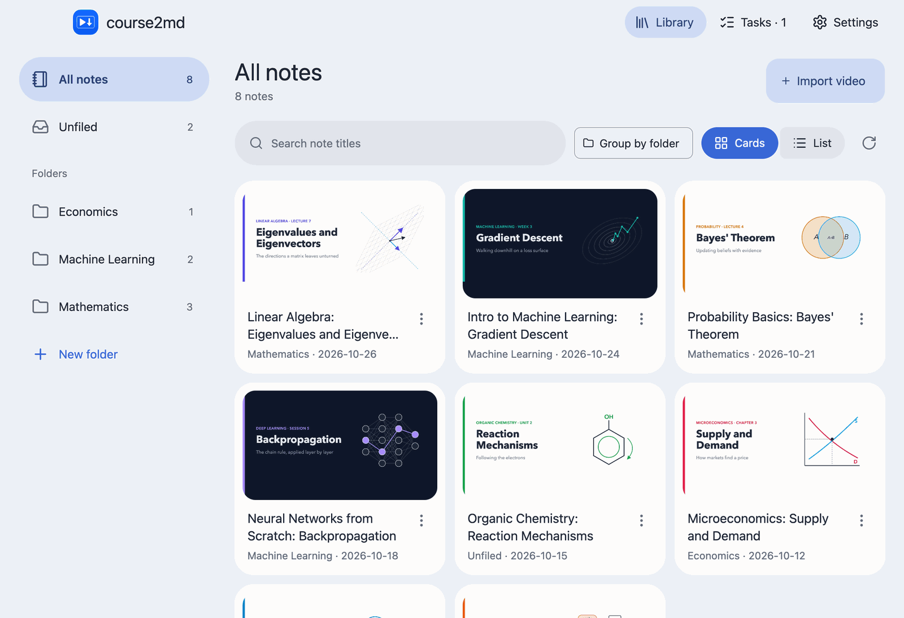
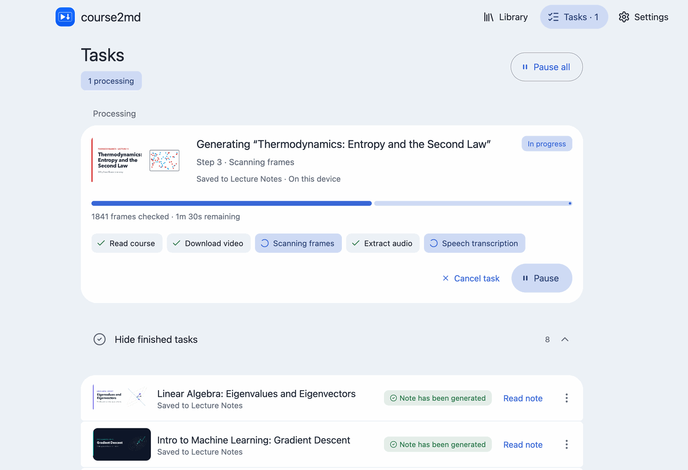
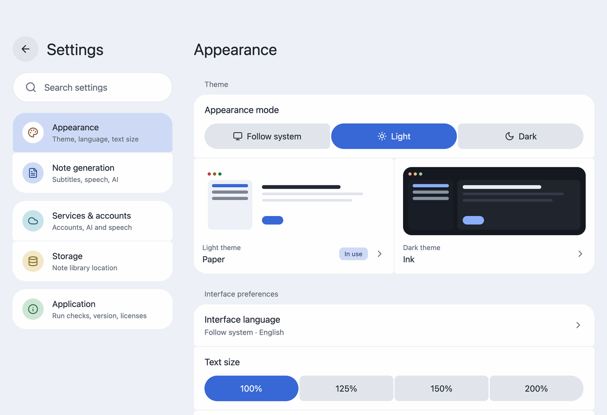

Notes shaped like the lecture
One screenshot per slide, with the matching transcript in paragraphs underneath, saved as ordinary course.md and course.html files you can open anywhere.
Paste a YouTube or Bilibili link, or drop in a local video. course2md captures a screenshot every time the slide changes, transcribes what is said beneath it, and keeps the result in a library on your computer.
Windows x64 (ZIP) Linux x86_64 (tar.gz) All downloads
brew install --cask mizorewww/tap/course2md-gui
Homebrew installs the app together with ffmpeg, yt-dlp and aria2. Free and open source under the MIT license.

Why course2md
One screenshot per slide, with the matching transcript in paragraphs underneath, saved as ordinary course.md and course.html files you can open anywhere.
Speech is recognized on your own computer: Apple Silicon works out of the box, and other systems use a graphics card, the CPU or an Intel Core Ultra NPU. Audio leaves your computer only if you choose a cloud service.
When a video already has subtitles they are used directly, with no speech recognition needed.
Proofreading, summaries, bilingual notes in eight languages and math formulas, including spoken ones, written as LaTeX and typeset. Works with any OpenAI-compatible service, a local Ollama server or a ChatGPT subscription. Off until you turn it on.
Export a note as HTML with its images, as Markdown with screenshots in a .zip, or as JSON data.
English, 简体中文, 繁體中文 and 日本語, following your system language. Switch any time in Settings → Appearance.
A tour of the app
Paste a link or drag a file onto Home. course2md reads the video first, so you can check the title, length and processing options before anything is converted. Multi-part Bilibili videos and playlists can be queued in one batch.

The reader opens on a summary and key points, keeps an outline of the sections beside the note, and finds text across the whole note.
The Screenshots view shows the whole lecture at a glance. Open any slide to see it large, zoom and pan, and read what was said at that moment.


Notes live in a library with nested folders, drag and drop, and search that covers subfolders. You can keep several library locations, and deleted notes go to the Trash (Recycle Bin on Windows and Linux).

Conversions run as tasks you can pause, resume and reorder, and they carry on after you reopen the app. Each step shows its progress, and model downloads show their size, speed and time left. If one part fails, read what finished and redo only the rest.

Choose from 10 themes, adjust the text size and reduce motion in Settings → Appearance. The interface speaks English, 简体中文, 繁體中文 and 日本語.

Install
The desktop app includes the conversion engine; you do not need the command-line tool to use it. Videos need ffmpeg, which the package managers below install for you.
With Homebrew, this installs the app together with ffmpeg, yt-dlp and aria2. Then open course2md from Applications.
brew install --cask mizorewww/tap/course2md-gui
Without Homebrew, download the DMG, drag course2md to Applications and install ffmpeg as described in the macOS guide. The app already includes yt-dlp.
yt-dlp and aria2.ffmpeg in PowerShell:
winget install --id Gyan.FFmpeg -e
course2md-desktop.exe from the extracted folder and keep the other files next to it.yay -S course2md-gui-bin
Or paru -S course2md-gui-bin. This installs the app, the video tools and the graphics libraries; your GPU needs a working Vulkan driver. See the Linux guide.
Download the tar.gz, install ffmpeg and the graphics libraries from the Linux guide, extract it and run ./course2md-desktop. Built on Ubuntu 24.04; it includes yt-dlp.
Downloaded models, the Bilibili login and the CLI's config.toml keep working. Notes made by 1.x stay where they were as course.md / course.html, but the 2.0 library only lists notes made by 2.0. Set up recognition and AI services again in the setup steps; convert old notes again to read them in the library.
To upgrade with Homebrew, run:
brew update && brew upgrade --cask course2md-gui
Back up config.toml before downgrading to 1.x. Coming from a release candidate? Quit the app and uninstall the course2md-gui@rc cask without --zap, so your data stays, before installing course2md-gui. Details are in the v2.0.0 release notes.
Intel Macs and Linux ARM64 have no desktop app yet; use the command-line tool. More in the first-launch guide and Troubleshooting.
Command-line tool
The course2md CLI does the same conversion from the terminal or your scripts. It can be installed beside the desktop app; the two share the Bilibili and ChatGPT logins and the downloaded speech models.
It needs ffmpeg; online links also need yt-dlp. Check everything with course2md doctor, and see the CLI guide for every command.
macOS / Linux, into ~/bin
curl -fsSL https://raw.githubusercontent.com/mizorewww/course2md/main/install.sh | bash
or Homebrew
brew install mizorewww/tap/course2md
or Arch
yay -S course2md-bin
$ course2md ./lecture.mp4
$ course2md https://www.youtube.com/watch?v=…
$ course2md ./lecture.mp4 -o ./notes